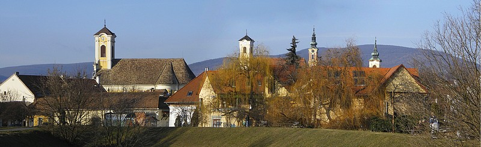

Szentendre a Dunakanyar kapujában, a Visegrádi-hegység és a Duna találkozásánál, a Szentendrei-szigettel szemben, gyönyörű természeti környezetben található. Kedvelt kirándulóhely.
A város az 1870-es évekig kisváros volt, alig érte a négyezer fős lakosságot. Az ekkori város lakóterülete ma mindössze két városrészt foglal magában, a Belvárost és a Szamárhegyet, bár ez utóbbi is csak a 20. század elején lett lakóterület.
A kisváros sajátosan mediterrán hangulata az elmúlt évszázadok folyamán alakult ki, amikor a törökök kiűzése után a magyarok mellett szerb, dalmát, a szlovák, német és görög telepesek népesítették be. A horvát kisebbség jelentős része saját magát dalmátnak nevezi. Ez a népesség Dalmáciából érkezett a 17. század legvégén. A város szerkezetét meghatározzák a fent említett nemzetiségek negyedei, "mehalái", illetve az azok központjában elhelyezkedő templomok.
